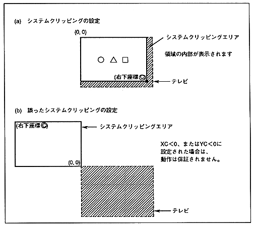

The system clipping coordinates are always valid at the time of drawing, and the outside of the set area is clipped. That is, the inside is drawn.
¡Clipping processing is performed with a rectangle. Since the upper left coordinate is fixed to (0,0), the value of the lower right coordinate (XC, YC) is defined in the command table.
¡Clipping coordinates are not checked, so set XC ≧ 0 and YC ≧ 0 beforehand. Operation is not guaranteed if XC <0 or YC <0.
∙ Points on the clipping line are treated as being inside the clipping area and drawn.
The clipping coordinate set command rewrites the internal clipping coordinate register. The parts after the rewriting are drawn with reference to the value.
This command can be defined in any number of frames, so you can have different clipping coordinates for each part group.
∙ Since the value of the system clipping coordinate is undefined after the power is turned on or reset, it is necessary to set it before starting drawing.
Figure 7.1 System Clipping
